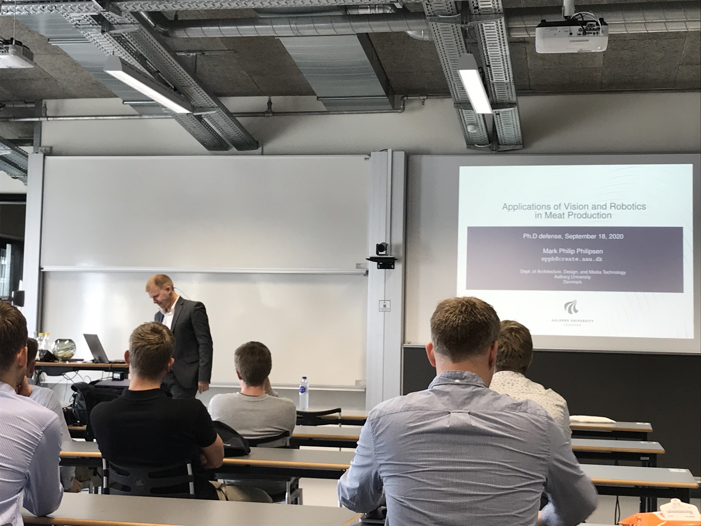
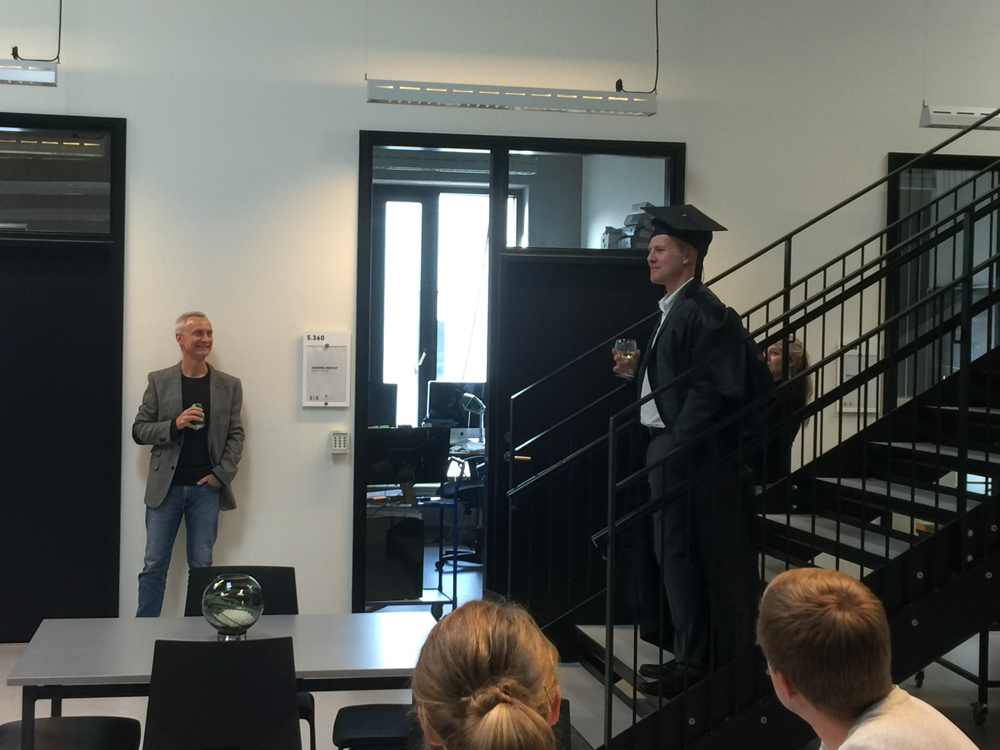

Ph.D defence Friday September 18th 2020
Posted on Fri 09 October 2020 in news
I attended the 2018 conference on Human-Robot Interaction. The primary reason was to present work done by VGIS students I had supervised during the autumn semester of 2017. Secondly, to gather inspiration for the new Grand Solutions - Augmented Cellular Meat Production (ACMP) project I was part of. Not that I would spend much more time on the HRI aspects but AAU had just acquired a new PhD that would work on this aspect of the ACMP project and I would like to be somewhat up-to-date on the topic.


